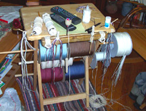
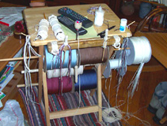

Frayed Knot Arts
Welcome, all! Thank you for stopping by to look over the hand crafted products I have been making on and off for about fifty five years. Initially, I was taught how to make knots by a Sailor in my Navy days and have now taken it up as a full-time business. We are located and work out of Seymour, Tennessee. I make belts, lanywards, wheel-coverings, tiller wraps, hand-rail wraps, belloropes, instrumnet staps...anything you can do with a pieceo of line, I can make. We also make jewelry for those who want to 'knock-em-dead' at the yatch club or marina. If you are interested in purchasing products please contact me directly to discuss product specifics and pricing. Feel free to click around to the knots and jewelry pages to see some of the current products we offer.

 
